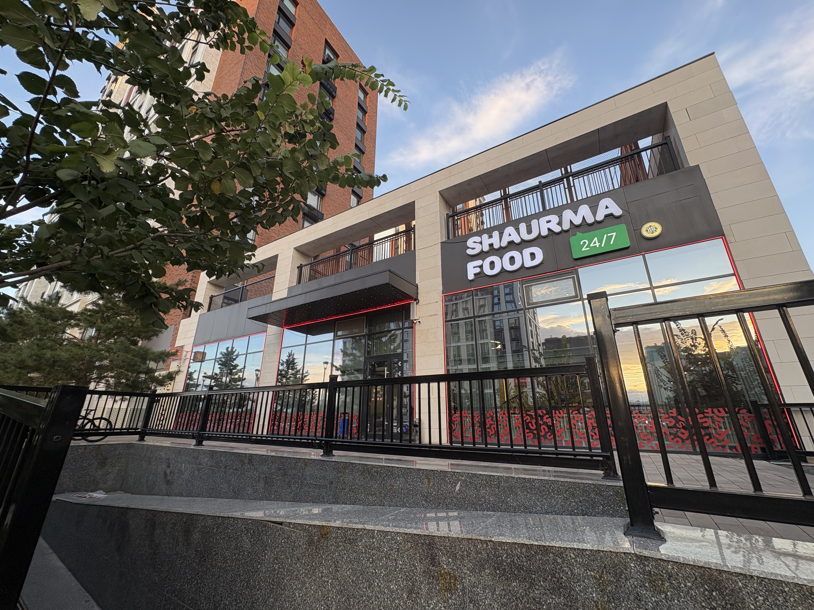
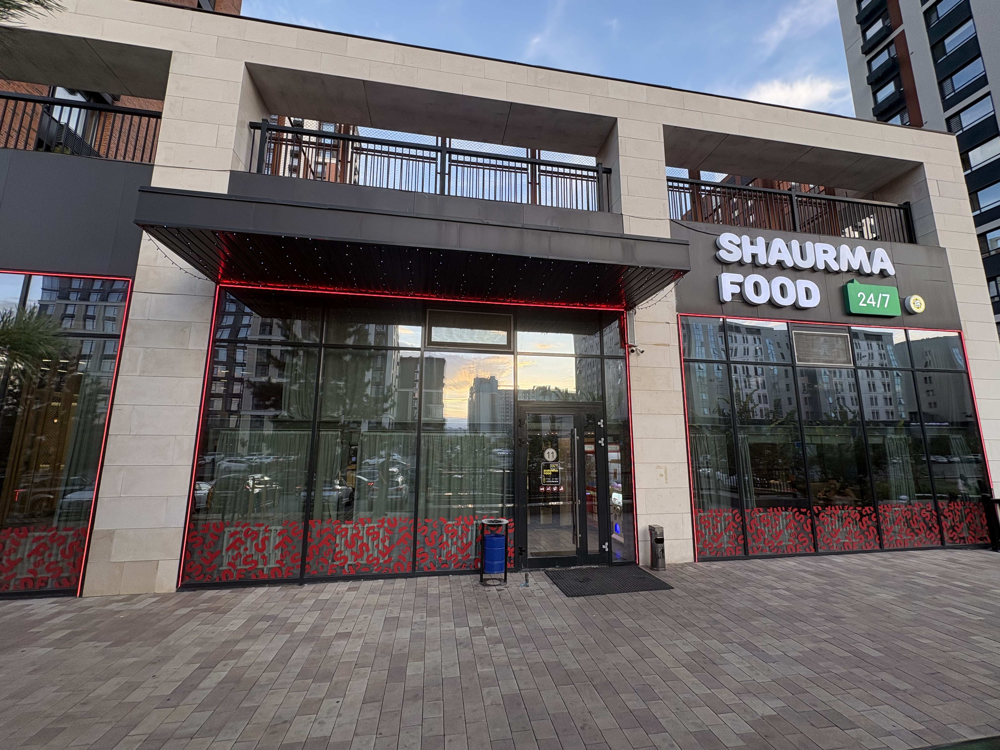
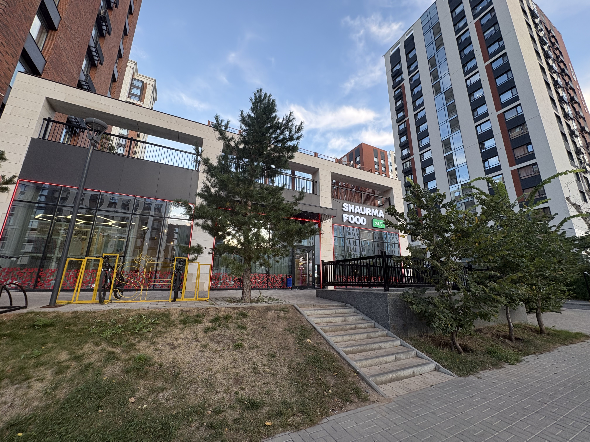

SF Menu
View prices · About the menu
Dishes and prices
SF prices on Wolt, checked 12 September 2026. Each shawarma price is for one portion. Check before ordering. Delivery prices can be different from prices at SF.
Some menu prices in tenge1
Dish Price
Chicken shawarma 1 490 ₸ Beef shawarma 1 890 ₸ Cheesy chicken shawarma 1 690 ₸ Chicken burger 990 ₸ Hamburger 1 390 ₸ Turkish ayran 690 ₸
Ayran is a separate drink.
1 Source: SF Shaurma Food on Wolt
Our photos

SF sign and front. Our photo.

The entrance to SF. Our photo.

SF building and nearby trees. Our photo.
Read the dish name and check the price. Shawarma is food and ayran is a drink. The shawarma price does not include a drink.
Main dishesChicken shawarma Beef shawarma
Drinks, including ayran.
Portion The amount of food in one serving.
KZT Short for Kazakhstani tenge.
FAQ Answers for visitors.
Before you order
Time to eat
This slogan is from SF on Wolt portion is one serving.
Ask SF about ingredients and available dishes. This table does not show calories. Talk about the menu by email , and choose who to send it to. Delivery costs extra.